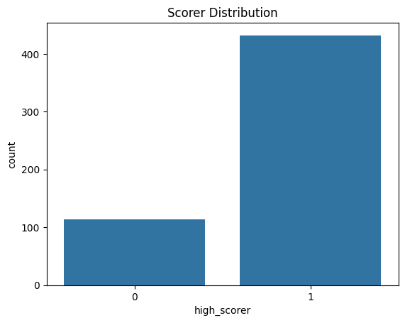
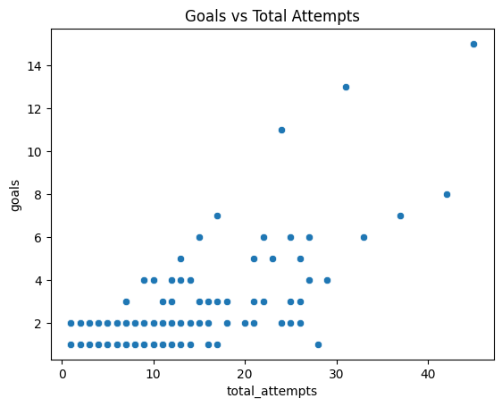
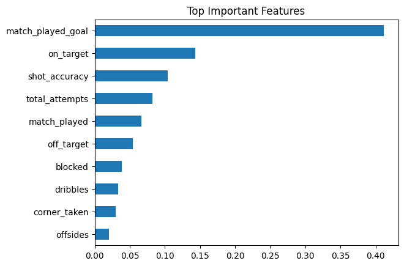

A Machine Learning Approach to Classify High-Scoring Players in the UEFA Champions League
Course: BCAI-601-MLT · Machine Learning Techniques · 2025–26
The UEFA Champions League (UCL) is the world's most prestigious club football competition. Identifying which players are likely to become high-goal-scorers before a tournament is invaluable for club recruitment, fantasy sports, and tactical analytics.
However, raw goals data is sparse and often unavailable ahead of time. The challenge is to predict a player's scoring class using only their attacking behaviour and shot statistics — metrics observable early in a season.
Binary Classification — Players scoring ≥ the 70th-percentile threshold are labelled High Scorer (1); the rest are Low Scorer (0).
Three structured CSV datasets from Kaggle – UCL 2021/22 Season player statistics are used.
🔗 kaggle.com/datasets/azminetoushikwasi/ucl-202122-uefa-champions-league
| File | Rows | Key Columns |
|---|---|---|
| attacking.csv | ~176 | player_name, position, assists, dribbles, offsides |
| attempts.csv | ~546 | player_name, total_attempts, on_target, off_target, blocked |
| goals.csv | ~183 | player_name, goals, right_foot, left_foot, headers, penalties |
*Target threshold: goals ≥ 70th percentile. High concentration of 0-goal players shifts the ratio to 79/21.
A multi-stage preprocessing pipeline was applied to ensure clean, consistent, and leak-free features for modelling.
Note: StandardScaler applied exclusively to Logistic Regression; tree-based models natively handle raw feature scales.
Three classifiers were trained and compared. Below is the end-to-end pipeline and individual model parameter details.
✦ Engineered feature via Domain Knowledge: shot_accuracy = on_target / max(total_attempts, 1)
Leakage-safe design: direct goal-output columns were removed, so the model learns predictive behavior patterns rather than memorizing target proxies.
| Model | Accuracy | Notes |
|---|---|---|
| Logistic Regression | 78.18% | Linear baseline |
| Random Forest | 89.09% | ★ Tied best |
| XGBoost | 89.09% | ★ Tied best |
Consistent pitch presence (match_played_goal) and aggressive shot volume (on_target / total_attempts) heavily dominate the algorithm's decision making process.

Dataset is imbalanced (~79% low scorers, ~21% high scorers), influencing model learning.

Positive correlation shows players with more attempts tend to score more goals.

Importance scores highlight the strongest predictors driving high-scorer classification.
Random Forest and XGBoost both achieved an impressive 89.09% accuracy, significantly outperforming Logistic Regression (78.18%) on the 546-player UCL dataset.
Shooting volume (total_attempts) and shot precision (on_target) remain massive predictors of high-scoring status — corroborating standard football domain intuition.
The custom engineered feature shot_accuracy successfully ranked in the top 4 most important metrics, validating the benefit of domain-driven feature engineering.
Strict data leakage removal (excluding exact goal details, conversion rates, etc.) was absolutely critical. Without it, the models artificially hit 100% accuracy by "cheating" and reading the target data.
Future Work: Hyperparameter tuning via GridSearchCV, incorporating spatial data, xG (expected goals), and cross-season generalisation could push model accuracy past the 90% threshold.
Key Takeaway
A Tree-Based model trained purely on shot attempt statistics and pitch presence can reliably classify UCL high-scorers with ~89% accuracy. This effectively demonstrates that underlying attacking behaviour and "hustle" stats are exceptionally strong mathematical proxies for actual goal-scoring potential.